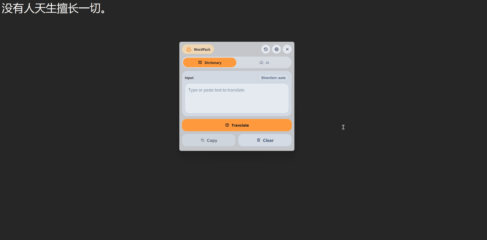
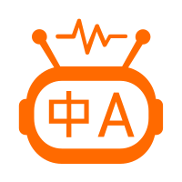
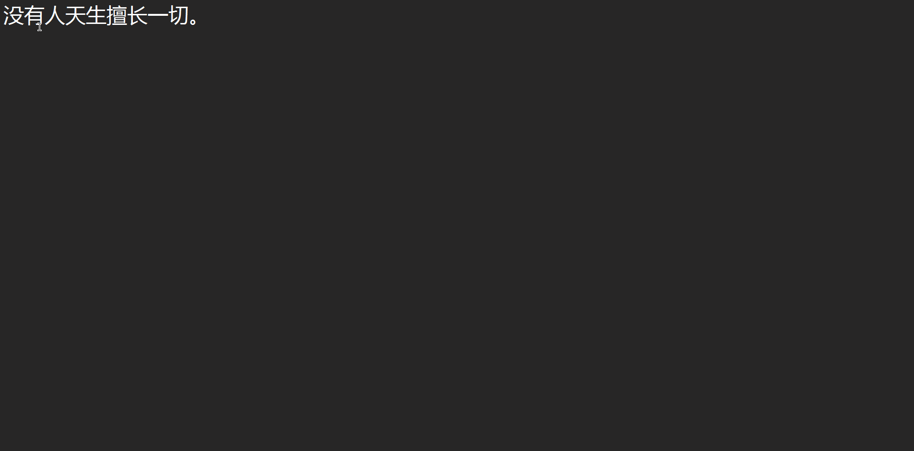

Windows


WordPack词小包WordPack 连接划词、截图 OCR、AI 翻译、离线词典和语音播放。无需打断当前工作流，在任何窗口里快速读懂外文内容。


保持阅读上下文不变，通过配置的方式触发划词翻译。
在设置中填写 Base URL、API Key 和模型，即可对接你偏好的 AI 翻译服务。
通过 Argos 模型包支持离线翻译，网络不可用时仍然可以继续阅读。
主题、语言、翻译模式、热键和 AI 配置集中管理。
使用 Windows SAPI 离线朗读译文，帮助听读、复核和记忆。
把翻译结果沉淀为可查找、可收藏、可复制的资料片段。
常驻任务栏托盘，快速打开主窗口、截图翻译或调整使用状态。
源码运行只需安装依赖并启动 python app.py；也可以在 Releases 中获取打包版本。